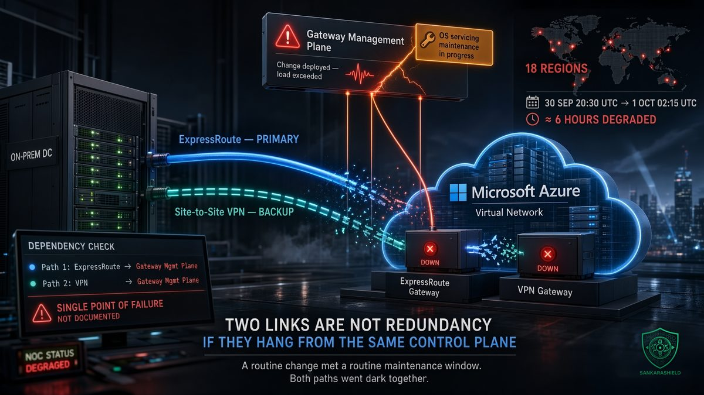

You built ExpressRoute with a VPN backup. Both failed at the same time, for the same reason.

On the evening of 30 September, a subset of Microsoft Azure customers lost the network connections between their own sites and their Azure virtual networks. Not one connection type: ExpressRoute gateways, VPN gateways, Azure Firewall, Application Gateway and its Web Application Firewall, and Azure VMware Solution were all affected. Impact ran from 20:30 UTC on 30 September to 02:15 UTC on 1 October, close to six hours, across multiple regions. Third-party trackers count 18.
Nobody attacked Azure. There was no zero-day, no DDoS, no cut cable. A routine change met a routine maintenance window, and the paths many organisations had designed as primary and backup went dark together.
If your hybrid network has "redundant" connectivity to a single cloud provider, this article is about you.
WHAT ACTUALLY HAPPENED
Microsoft tracks the incident as 7Q30-010, "Multiple services experiencing connectivity issues in multiple regions". Its preliminary review describes the cause in two parts.
First, a recent change to a regional gateway management service, the software that manages the gateway fleet behind ExpressRoute, VPN Gateway, Azure Firewall and Application Gateway. Second, an unrelated operating system servicing operation that was rolling gradually through multiple regions at the same time.
Together, they generated more work than the gateway management service expected. It tried to scale up as designed. In Microsoft's words, "demand on dependent services increased due to the increased workload, preventing these regional services from scaling as expected."
The timeline from the preliminary review
20:30 UTC — customer impact begins. 21:29 UTC — service monitoring identifies connectivity issues in UK South. 22:27 UTC — the investigation expands and the multi-region scope is identified. 23:05 UTC — the OS servicing is paused as a precaution. 01:36 UTC — configuration changes are applied to the remaining impacted regions. 02:15 UTC — mitigation confirmed.
Microsoft's preliminary review names UK South, UK West, France Central, North Europe and Southeast Asia. Third-party trackers list 18 regions in total, from West US and West Europe to East Asia, South Africa North, UAE North and India. A final Post Incident Review is due within 14 days of the incident.
WHY YOUR REDUNDANCY DID NOT HELP
The classic enterprise design for hybrid cloud connectivity looks resilient on a diagram. ExpressRoute as the primary path: private, predictable, carried by a connectivity provider. A site-to-site VPN over the internet as the backup: different carrier, different physical route, different technology.
Every one of those differences sits below the gateway. Above it, both paths land on Azure-managed gateways in the same region, and those gateways are run by the same management service. When that service struggled, it did not matter how diverse the circuits were.
This is the difference between data-plane redundancy and control-plane redundancy. Most resilience reviews check the first: two links, two routers, two carriers, two entry points into the building. Far fewer ask which software decides whether those links work, and whether that software is shared.
Diversity of circuits, carriers and routes gives you no independence if one control plane sits above all of them. Two things that can fail for the same reason are one thing.
TWO SAFE CHANGES, ONE OUTAGE
The most instructive part of this incident is how ordinary its cause was.
A change to the gateway management service was, presumably, tested and safe on its own. OS servicing is a background activity that runs constantly in every large platform, and it was safe on its own too. Neither would have caused an outage in isolation. Overlapping in time and region, they pushed a scaling mechanism past what its dependencies could absorb.
This is not a cloud-only failure mode. It is how many enterprise outages happen. The network team pushes a routing change on Tuesday night. The server team patches the hypervisors on the same night. The security team updates firewall policy in the same window because that is when change approval is easiest. Each change is reviewed individually. Nobody reviews the collision.
A change advisory board that approves changes one by one, without checking what else is running in the same window, on the same infrastructure, is checking the wrong thing.
THE HOUR NOBODY SAW
Look again at the timeline. Impact started at 20:30 UTC. Microsoft's monitoring identified it at 21:29 UTC, and the multi-region scope at 22:27 UTC.
That is roughly an hour before the provider detected the problem, and two hours before it understood the scale. During that time, affected customers had only their own monitoring to tell them what was going on. Many will have spent it checking their own routers, opening tickets with their connectivity provider, and wondering whether the VPN failover had worked.
It had not, for the reason above. But a NOC that only monitors its own equipment will see link-up on the ExpressRoute circuit, an established VPN tunnel or a flapping one, and traffic that does not arrive. Without end-to-end probes into the cloud and without the provider's health feed, the first hour of a provider-side incident looks exactly like a local fault.
NOT A ONE-OFF
This was the second notable Azure incident in two days. On 29 September, between 10:03 and 15:58 UTC, Azure OpenAI, Foundry and Cognitive Services in Sweden Central suffered intermittent failures and higher latency, which Microsoft attributed to backend instances that hit utilisation thresholds and restarted repeatedly. Different services, different cause, no published link between the two. But the shape is familiar: automation and scaling, not hardware, were at the centre.
And the pattern is older than this week. Five years ago almost to the day, on 4 October 2021, a routine maintenance command withdrew the BGP routes for Facebook's DNS servers and took Facebook, Instagram and WhatsApp offline for around six hours. The internal tools engineers needed to fix it depended on the network that had just disappeared.
The common thread is not a vendor. It is that the most dangerous component in a modern network is the software that manages it, and that software is shared far more widely than our diagrams admit.
WHAT TO DO NOW
MAP SHARED DEPENDENCIES, NOT JUST LINKS — for every "redundant" path to the cloud, write down the gateway, the region, the management plane and the identity system it relies on; any row that appears under both primary and backup is a single point of failure, documented or not.
TEST THE FAILURE YOU JUST SAW — simulate losing both ExpressRoute and VPN gateways in a region at the same time, then check what still works: authentication, DNS resolution, backups, replication, monitoring and the admin tools you would need to fix it.
KEEP A PATH OUTSIDE THE PROVIDER — break-glass administrative access and the handful of workloads the business cannot lose for six hours need a route that does not depend on the provider's gateway fleet, whether that is a second region with independent gateways, a third-party network appliance, or a second provider.
WIRE THE PROVIDER'S HEALTH INTO YOUR NOC — configure Azure Service Health alerts for the services and regions you use, send them to the same paging system as your own alarms, and add synthetic probes that test end to end from your sites into your virtual networks.
CHECK YOUR OWN CHANGE CALENDAR FOR COLLISIONS — require every change request to show what else is scheduled on the same infrastructure in the same window, including patching and maintenance by other teams and by your providers.
READ THE FINAL REVIEW WHEN IT LANDS — Microsoft's Post Incident Review is due within 14 days; use it to confirm whether your regions were affected and which repair items apply to your design, and update your continuity plan with what you learn.
WHAT TO READ WITH CARE
The cause, the tracking ID and the timeline come from Microsoft's preliminary incident review. The figure of 18 regions and the full region list come from third-party outage trackers and press coverage; the preliminary review names five, and the final Post Incident Review may differ. Microsoft describes the impact as affecting a subset of customers using gateway services, so many tenants in the listed regions will have seen nothing at all. Durations quoted in coverage range from about five hours forty-five minutes to just over six hours depending on the start time used.
THE UNCOMFORTABLE PART
We buy cloud connectivity the way we used to buy leased lines: count the links, check the SLAs, put two boxes on the diagram and call it resilient. But the thing that failed on 30 September was not a link. It was the software that operates the links, and it was shared by every path that was supposed to be independent.
That is not an argument against the cloud. It is an argument for designing as if the provider's control plane will fail, because sometimes it will, and for knowing in advance what keeps working when it does.
Redundancy is not two links. It is two things that cannot fail for the same reason.
So ask it now, before the next maintenance window asks it for you: when did your team last test losing both cloud connectivity paths at once?